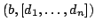
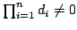
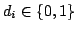
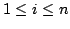
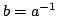

Usage
inverse(M)(a)
Signature
inverse: (M:MatrixCategory %) M
| Parameter | Type | Description |
|---|---|---|
| M | MatrixCategory % | A matrix type |
| a | M | A matrix |
Returns
Returns  such that
Remarks
 if and only ifis invertible. When
is a Field, then  for , so  when